A SARIMA Approach to a COVID-19 Dataset
for the final project of statistics 135 spring 2020
a dummy friendly version
A time series model is a family of statistical model that aims to model data that progresses with time. The goal of time series model is to model any possible relationship between data points so the what is left is just random noises or random small fluctations. In this blog, I will talk about using a time series approach to model a dataset of number of cases of COVID-19 in Timseria (fake place but real data). The sample dataset spans a duration of 66 days.
We will start by exploreing the dataset by plotting it out! From the sample plot, we can see that the number of cases skyrocketed around day 50. However, since the difference in our sample is huge, it's hard to observe what's the relationship between early data pointsd and later datapoints and what is happening in the middle. As such, we can take the log of the daily counts of dataset to reduce the variance, or bring the data on two extremes closer to each other. And of course, we see a clear cutoff at around day 35. Emm it's not 50? That's why how reducing the variance can help us better visualize the sample somtimes. Now that we have a good idea about what the general shape is like, let's dig into the dataset and start our analysis.
Plot of the sample
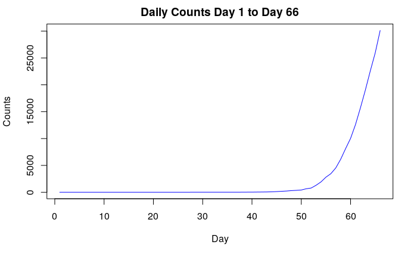Plot of the log counts
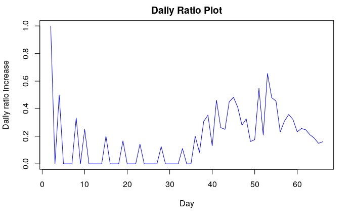The first thing we will do is to calculate the difference between adjacent data points, so the nth data point, xn, becomes xn - xn-1. You might ask what happends to first data point? Well no pain no gains. But I promise you it will pay off later. The effect of taking difference is that it elimainates any linear trend. It is effectively equvalient to fitting a regression line to the data and getting the residuals. Why you may ask? Well think about it this way: having a linear trend means that your data increases/decreases by a constant, a, at each time step. Therefore in perfectly linear dataset, the ith datapoint, xi, is equal to x1 + a(i-1). In the same way, xi+1 = x1 + a*i. Therefore, substracting xi and xi+1 would elimated the influence of a on the dataset. Similiarly, taking the difference twice, or taking the second order diffference, will elimainate any quadratic trend with a power of 2. You might be wondering: "Why are we doing this?" Well let't backtract a little bit and think about what is the goal of time series model. The goal is to model all relationship between data points such that only noises or random fluctations are left. By differencing and elimating the trends, we can achieve what is called weak stationarity, which says that the mean (average) of the data is approximately 0 and there is not trend or seaonality left in data. And a staionary process is pretty close to noises in many cases. Wait, what on earth is seasonality? Well think about a dataset of monthly turkey sales in U.S.; which month would you expect most of the sales? Probably November right? Therefore, imagine if you plot the monthly sales of turkey across many years, you can expect to see a big spike at every November. This is what we will call seasonabilty. It something that occurs after each period of time. Seasonabilty can taken out by doing what we can seasonal diffferecning. Totally didn't expect the way to take out seasonality would be seasonal differencing, aren't you? :) Since the seaonality doesn't seem to bump up any where in this dataset, we ill skip this part for now.
Plot after the first differencing
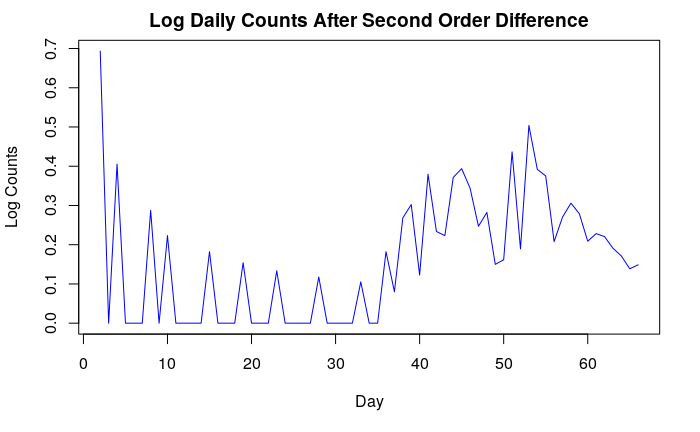Plot after the second order differencing
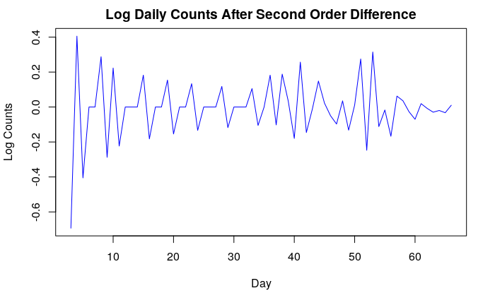So if we take a look at the plot after second differecing, it looks pretty random right? But is it? Among the many noises you observe in your life, some noises are actually a combination of different processes and the relationship made the them significant for our goal. Think about two famous singers, one singing rock and another one singing classical. If they sing at the same time, it would sound like they are just making noises, but they are actually not! (Well, unless you hate rock or classsical music) So if we learn more about rock and classical music, we will be able to model the "noise"! The same thing might be happening here as well. Hence, we will need more tools from our tool box: the acf plot and pacf plot. Without diving into the math part, you can think of acf and pacf as detectors of subtle relations in the seemingly random data. For example, in the acf and pacf plot of the data after the differecing, we observe two big spikes in the acf plot that bypass the blue boudary that we draw up for them. Flashback to when you are kid and when your parents ask you to stay in where you are. What happens if you decide to stand up and go around, then you are "naught baby". : ) This also applies to here (well, in some way): if we observe any spikes, other the first one, that bypasses the blue boundary, we know something fishy is going on. Then same things happens to pacf plot, except this rule even applies to the first spike. Guess pacf is worse kid there that needs more regulations. (just kidding) If there's any trespasses, we will suspect there is something called ARMA process going on underneath the data. An ARMA model captures the subtle correlations between data points. How does it do it takes some math to expalin, so we will skip it here, but I would encourage you to look it up online if you have the probability background of a upper division probability class. Different acf and pacf plots can give us hints on what kind of parameter that an ARMA process has. In this case, for both acf and pacf, most of the bars are staying nicely in line except the first one or two. In this case, we can actually resonably assume that it might be an ARMA(1, 1) process. It is usually more complicated than that and it's not a definite proof. The only way to confirm is to actually model it and see how well it fits the sample. That's what we are going to do now. And actually, we can combine ARMA and differecing technique into a process called ARIMA. Why not AR-D-MA OR D-ARMA? Well life is harsh, not evveryone can use their initials as their school or google email. By combining everything into an ARIMA process, our model becomes an ARIMA(1, 2, 1) process, where 2 stands for second order differecing.
ACF after second differecing
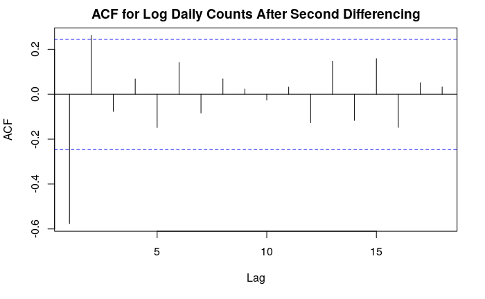PACF after second differecing
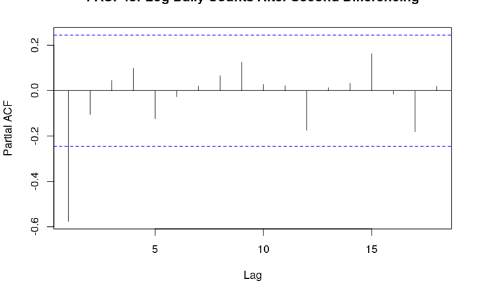With the SARIMA funtion in the TSA package, we can fit the model easily and the function also returns an acf plot of the residuals, along with many other plots. We will come back to what SARIMA statnds for, for now, just think about it as a magic function that can model any ARIMA prcoess! From the plot, we can see that we manage to get all the acf values to stay in line with ARIMA(1,2,1). But you may ask what are all these other plots? Starting with the one on the top, the top plot is just a plot of residuals for a sanity check to make sure nothing crazy is going on (the process must look stationary-ish ) The one next to acf is the normal QQ plot, which checks if the residuals seem to follow a normal distribution by seeeing if all the points follow a straight line. The bottom one is called Ljung-box statistics. This checks if our model is good fit for the sample points by performing hypothesis testing. A good fit is above 0.5. And we can see the residual plot does't show anything crazy and the QQ plot is kinda a straight line. Most of the points are statistically signicantly (means they pass the test yay!) according to Ljung-box statistical test. However, the pacf if missing here so we manually plot the it and all bars are within the blue boundary. Next, we will look at three "IC"s: AIC, BIC, and AICc. The three "IC"s tell us how probable it is to obtain our sample given model is true. The differences bewteen them is that BIC and AICc penalize, or dislike, complex models. AIC is most lenient on complex models and BIC is the harshest. For all three "IC"s, the smaller the better because we put a negative sign in the front when calculating the probability.
Model summary ARIMA(1, 2, 1)
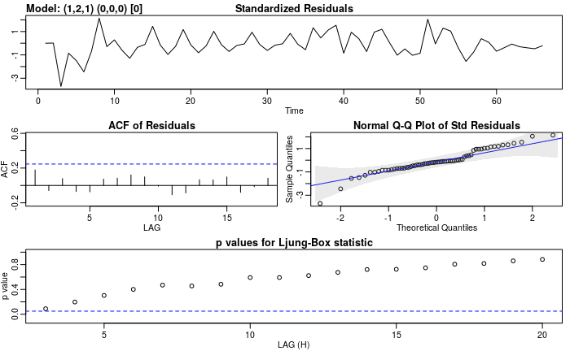pacf ARIMA(1, 2, 1)
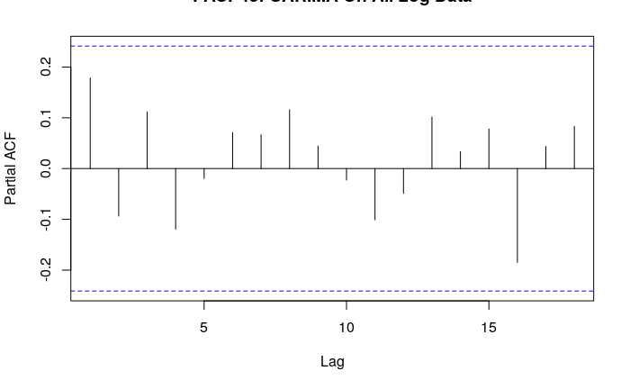Three "IC"s ARIMA(1, 2, 1)
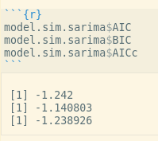Now, we want to try to improve our model. There are many things we can do. For example, we can probably try to model to percent of increase instead of the daily counts. Here, I propose that we can try to get a more accurate model by selecting the most relevant data. As mentionaed above, there seems to be a cutoff at day 35, which probably means that the situation deteriorated significantly on that day. Therefore, it is possbile that the data before that day is not representative of the current situation. However, it's actually pretty tricky to say if certain data are relevant or not, but we can get a better idea after trying. We started by ploting the data starting at day 35 and onward. In this trucated plot, we can observe a clear line trend! Then we procced to use first order differencing to eliminate the trend and see what's left. I did this by directing modeling using ARIMA(0, 1, 0) and SARIMA function. Surprisingly, everything looks very resonable, which means there is not ARMA process at all! In addition, all the "IC"s are smaller than the previous model. So maybe this model is better than the previous in terms of the "IC"s.
After day 35
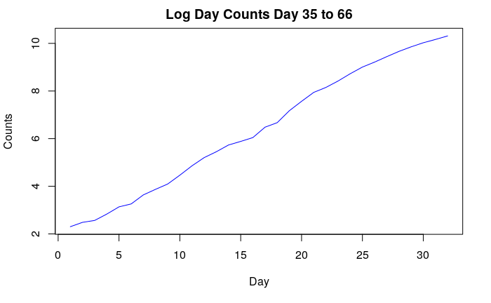Model summary ARIMA(2, 1, 0)
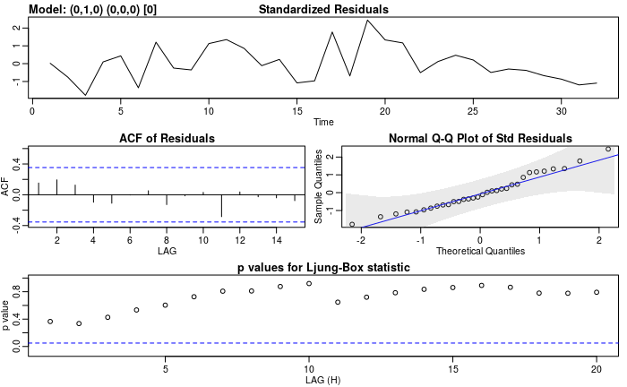pacf ARIMA(2, 1, 0)
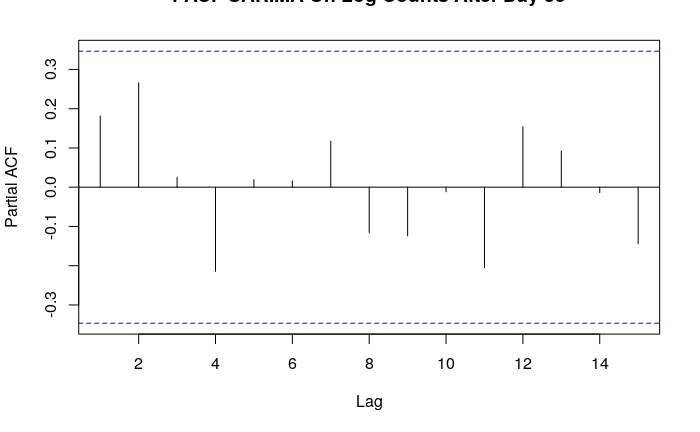Three "IC"s ARIMA(2, 1, 0)

However, so far, all the metrics we have seen only shows how well the model fit the sample. But how can we know if a model is good at makeing future preidcations? After all, that's what we really care about! It is the same way if I want to make a practice final on my own, what I really care about is how well it matches the actual final that is in a week instead of last year's final. To do this, we use a technique called cross validation. Cross validation can mean different things for other models. However, in time series, it looks like this: I start with only half of my dataset, which we call train set, and fit an ARIMA models with the parameters that I think is good, and pretend that I don't know anything about the second half. Then I use the the model to predict the second half of the data set, which we call validation set, and calculate the average of differences between my prediction and the validation set squared, which we call MSE. Then I take out the first data point in the validation set and put it in the train set. Then I fit and model with new train set and use the model to predict the validation set, and calculate the new MSE. We repeat the process until the test set runs out. Then we take the average of all MSEs, which we call cross validation error. Since cross validation error is obtained without only partial knowledge of the dataset, we can get a sense of how well our model will perform in the actual prediction. And it seems the second model wins on cross validation error for more recently datam (not shown in the plots), which makes sense because it is tailored to perform better on more recent data. We the proceed to make prediction with ARiMA(0, 1, 0) model trained on the data after day 35. The predications for next ten days are shown in a plot below along with the original data. One big warning sign is the cross validation error for both model look pretty large. This may mean that we need a even better model. However, we will end here today. I will update you guys if anythign else comes up. Thanks for reading! :) PS: The SARIMA is a even more comprehensive model than ARIMA. It can even model seasonalities in the data set but it also have 6 paremeters! So in the same way ARIMA can model ARMA, SARIMA can model ARIMA and ARMA.
Predictions
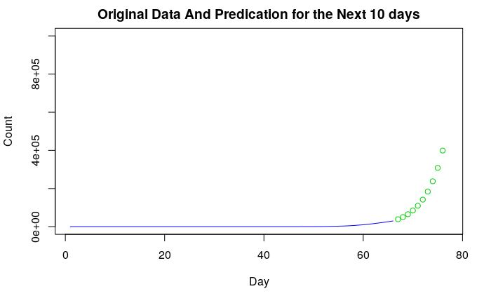